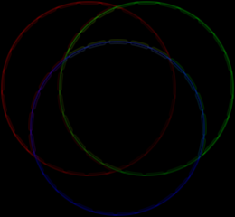
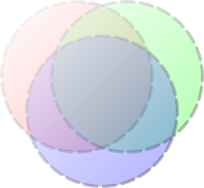
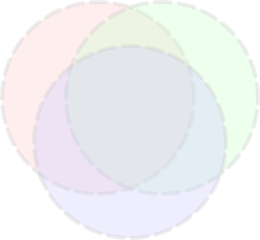

4.5 Pointwise Operations
> (define-values (dx-fm dy-fm) (flomap-gradient (flomap-drop-components fm 1)))
> (flomap->bitmap (fmsqrt (fm+ (fmsqr dx-fm) (fmsqr dy-fm)))) 
函数
(flomap-normalize fm) → flomap
fm : flomap
> (define gray-fm (build-flomap 1 100 100 (λ (k x y) (+ 0.375 (/ (+ x y) 800))))) > (flomap->bitmap gray-fm) > (flomap->bitmap (flomap-normalize gray-fm))
Two flomaps. Both flomaps must have the same number of components, or one of them must have one component. If one flomap has one component, it is (conceptually) self-appended (see flomap-append-components) as much as needed before the operation. In either case, both flomaps must have the same width and height.
One flomap, one Real. In this case, the real value is (conceptually) made into a uniform flomap (see make-flomap) before applying the operation.
> (define fm1 (build-flomap 1 260 240 (λ (k x y) (/ (+ x y) 500)))) > (define fm2 (fm- 1.0 fm1)) > (flomap->bitmap fm1) > (flomap->bitmap fm2) > (flomap->bitmap (fmmax fm1 fm2)) > (flomap->bitmap (fm* fm1 fm)) 
> (fm/ (make-flomap 1 10 10 0.5) (make-flomap 1 30 30 0.25)) fm/: expected same-size flomaps; given sizes 10×10 and 30×30
Binary pointwise operators could behave according to the Conceptual Model—
> (flomap->bitmap (fm* fm 0.2)) 
Using inline-flomap-lift instead of flomap-lift may ensure that f is inlined, and therefore floats remain unboxed.
This is not available in untyped Racket.
Using inline-flomap-lift2 instead of flomap-lift2 may ensure that f is inlined, and therefore floats remain unboxed.
This is not available in untyped Racket.